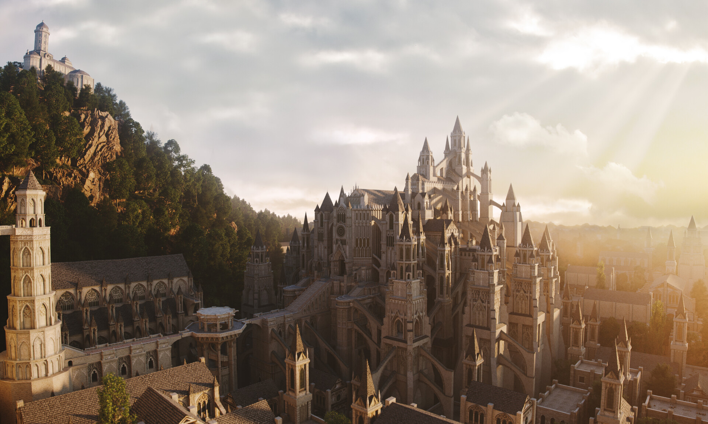

O Destino das Cinzas

Explore as categorias acima para encontrar detalhes técnicos e histórias profundas sobre o universo de Dark Souls.

Explore as categorias acima para encontrar detalhes técnicos e histórias profundas sobre o universo de Dark Souls.
Tudo começou com a Primeira Chama, que trouxe a disparidade ao mundo. Gwyn, o Lorde da Luz, sacrificou sua própria alma para prolongar a Era do Fogo, cometendo o Pecado Original e amaldiçoando a humanidade com a marca dos Mortos-Vivos.
Ler Crônicas Completas →Eras depois, reinos surgiram e caíram sobre as cinzas de Lordran. Em Drangleic, o Rei Vendrick tentou encontrar uma cura para a maldição, apenas para descobrir que o ciclo de luz e trevas é uma lei inevitável da natureza que apaga as memórias de quem a porta.
Ler Crônicas Completas →O mundo está em colapso. As terras convergem para o fim dos tempos. Os Lordes das Cinzas abandonaram seus tronos, e cabe a um Ser Inaceso (Unkindled) decidir se a chama deve ser acesa pela última vez ou se a escuridão finalmente deve reinar.
Ler Crônicas Completas →Deixe seu recado no mural. Requer uma conta no GitHub.